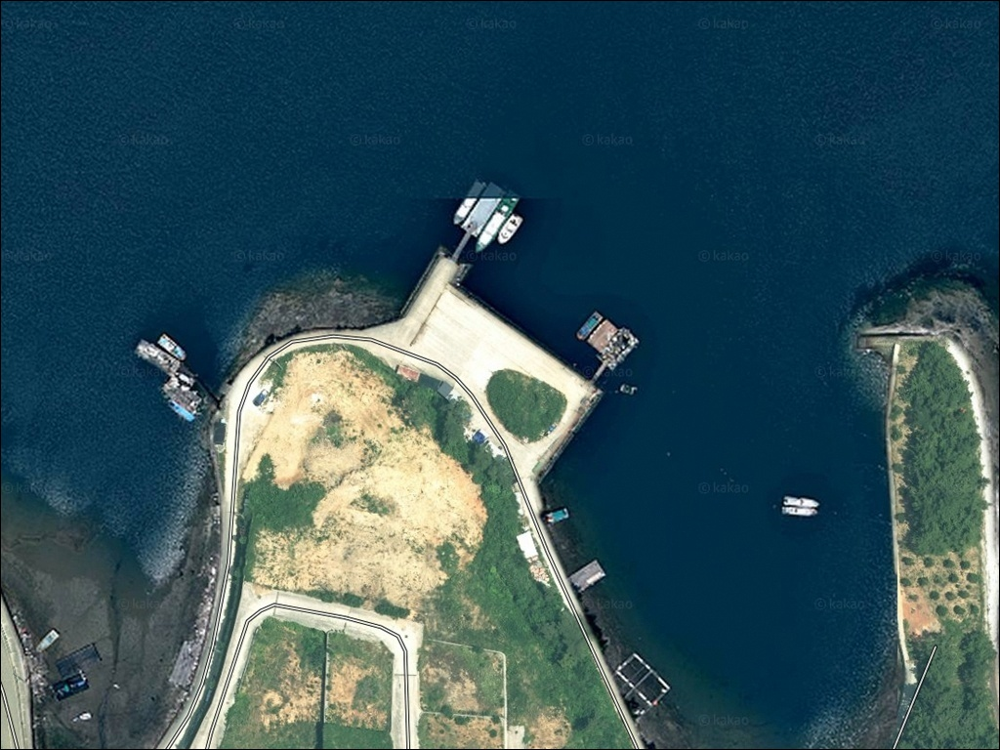
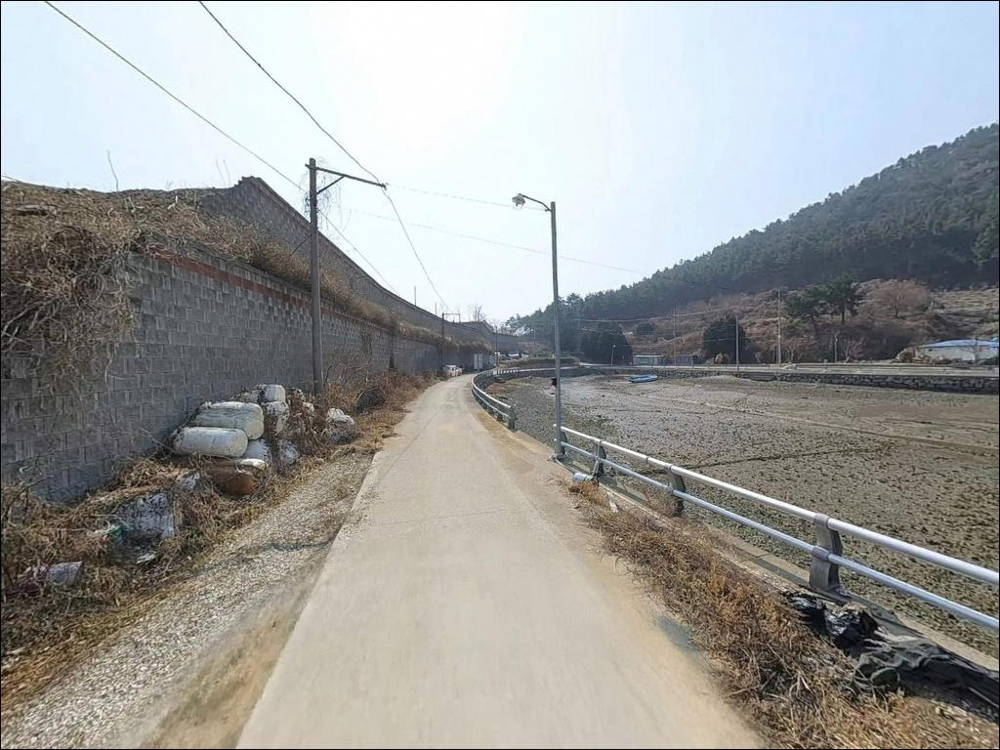
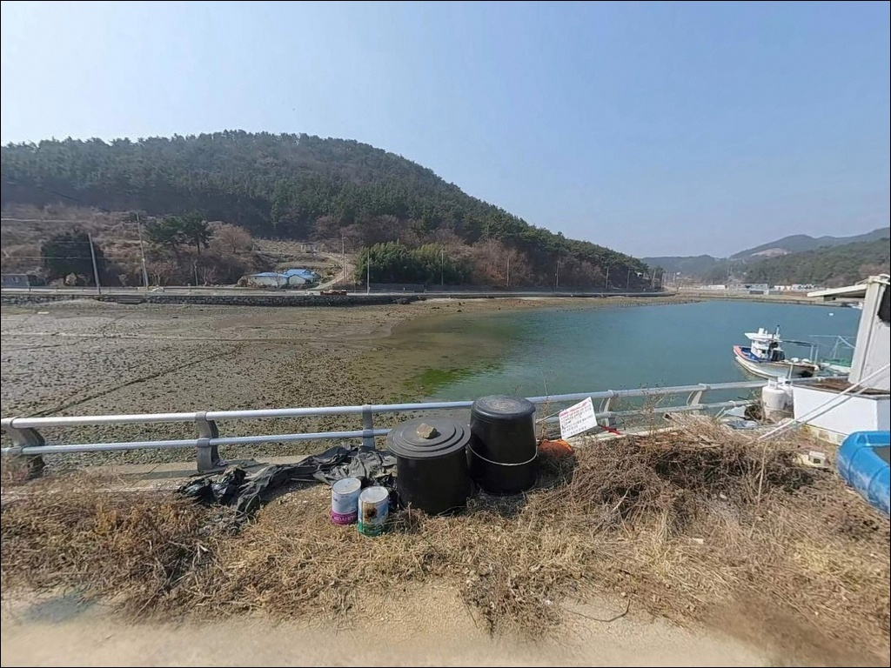
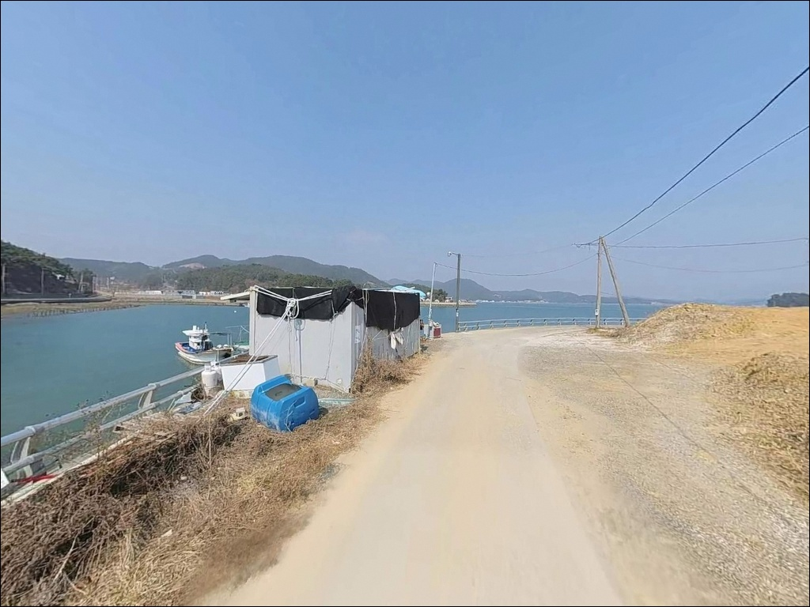
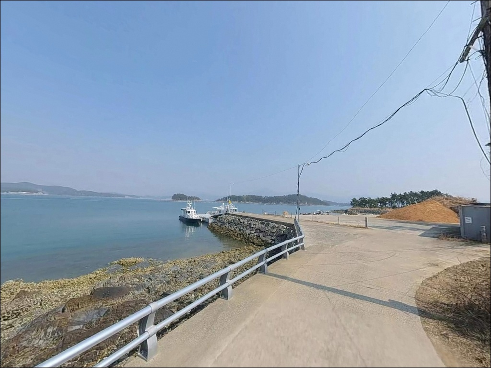
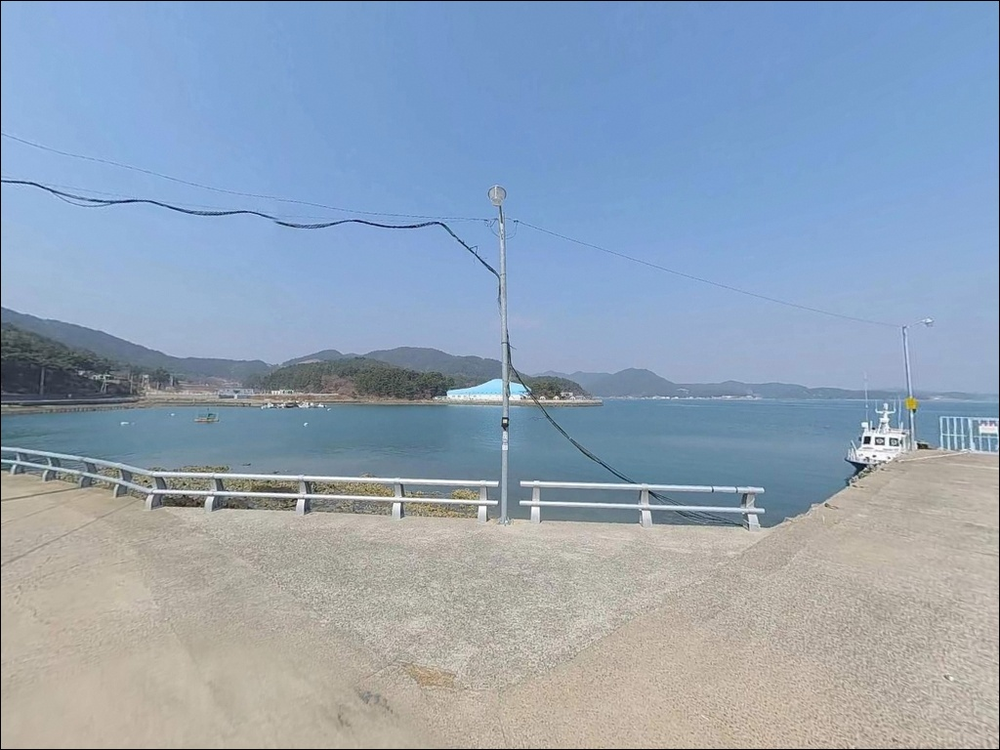
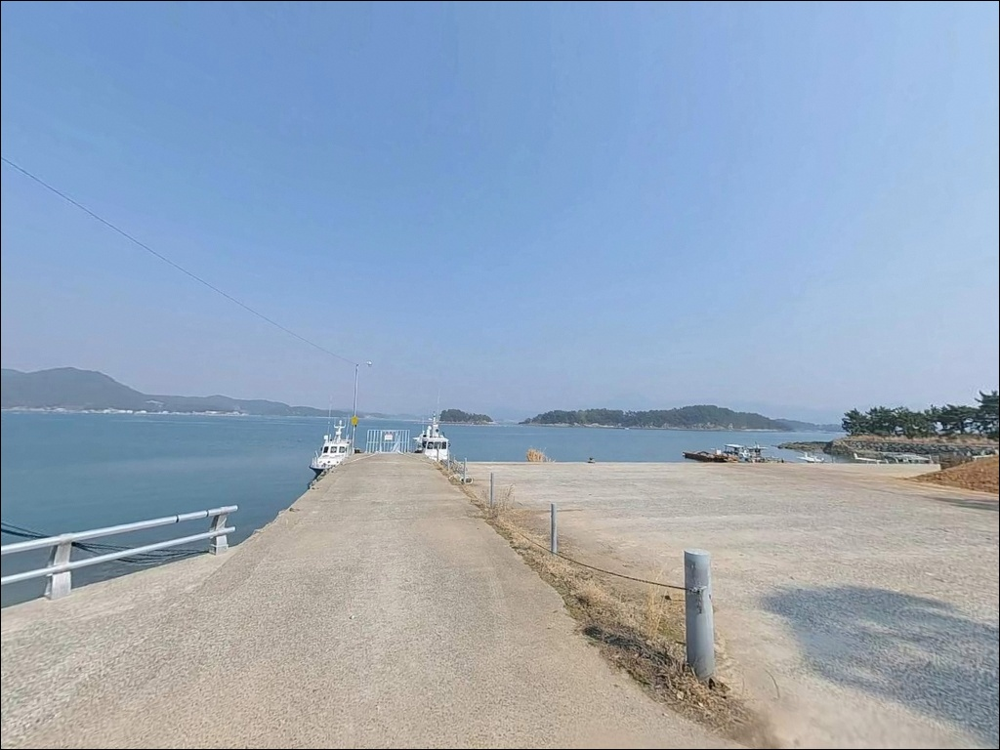
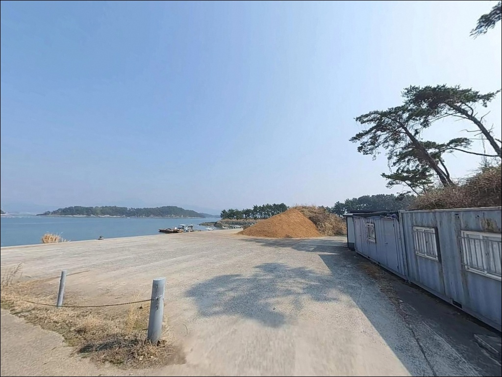
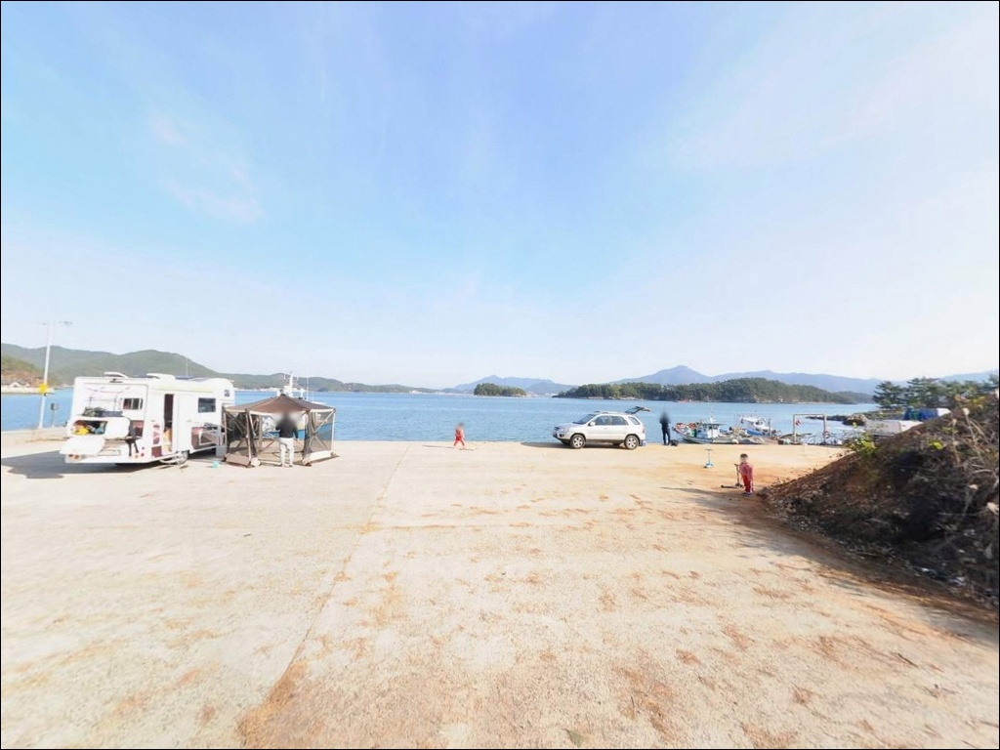

이 페이지에는 광고(제휴 링크 포함)가 있으며, 광고 링크를 통해 구매하면 운영자가 판매 수익 또는 수수료를 받을 수 있습니다. 포인트 사진: 카카오맵 스카이뷰·로드뷰. 이 페이지의 지도·사진 이미지는 카카오맵의 실제 서비스 이미지와 다를 수 있습니다.

두포선착장
경남 고성군 삼산면 두포리 5-4
자란만 내만 선착장이라도
물때를 확인하지 않고 진입하면
조류가 완전히 멈춘 정조 구간과
채비가 쓸려버리는 급류 구간을
구분 없이 만나게 됩니다.
두포선착장은 조류 흐름이 완만한 내만 구조이지만,
그 완만함이 언제 살아나는지를
먼저 계산해야 낚시가 성립합니다.
이 글은 두포선착장의 진입 동선과
차박 여건, 물때 기준, 낚시 스타일별 조건에
집중합니다.
조황 단정이나 특정 어종 보장은
이 글의 범위에 포함되지 않습니다.

두포선착장은 1010번 해안도로를 통해
접근하는 구조입니다.
고성읍에서 삼산면사무소를 거쳐
판곡리·병산리를 지나 두포리로 이어지며,
전 구간 포장도로로 연결되어 있습니다.
해안선을 따라 이어지는 도로 특성상
급경사 구간 없이 선착장 인근까지
차량 진입이 가능합니다.
승용차 기준으로는 진입에 어려움이 없고,
캠핑카도 무리 없이 들어올 수 있는 폭입니다.
단, 대형 차량이라면 출발 전
위성지도에서 선착장 직전 구간의
도로 폭을 사전에 확인하는 편이 안전합니다.
선착장 앞 공터에서 회차가 가능한 구조이며,
주차 후보로는 선착장 인접 공터와
해안도로 가장자리 공간을 활용하는 방식이
일반적입니다.
어선 접안 동선을 막지 않는 자리 선택이
기본 매너입니다.

두포리 일대는 민가 밀집도가 낮고
소규모 마을 단위로 분산된 구조입니다.
외해와 직접 연결되지 않는
자란만 내만 지형 덕분에
야간 파도와 바람의 직접 영향이 적은 편이어서
차박 체류 환경은 안정적인 축에 속합니다.
야간 조명은 마을 진입부와 도로 교차점을 중심으로
간헐적으로 설치되어 있으며,
선착장 주변은 조명이 최소 수준입니다.
외항 방향 낚시 시에는 시야 확보를 위해
헤드랜턴과 예비 배터리 지참이 필수입니다.
선착장 전면 공터에 차량을 배치하면
바다를 정면으로 바라보며 낚시와 차박을
동시에 운용하는 동선이 나옵니다.
단, 주차 공간이 넓지 않으므로
어선 작업 동선과 겹치지 않는 자리를
먼저 확인하고 배치하는 것이 좋습니다.

두포리는 삼산면 내에서도 외곽에 위치해
편의점이나 마트는 삼산면사무소 방향이나
고성읍 쪽으로 이동해야 이용이 가능합니다.
낚시 소품과 채비는 고성읍 내 전문 낚시점을
미리 들르는 편이 현실적입니다.
식수, 얼음, 여분 채비는 출발 전 완비하고
진입하는 것이 기본 준비입니다.
두포리 권역 안에는 하모자연산횟집,
나포리횟집, 큰들횟집민박 등
현지 식당이 확인되어 있어
식사 해결은 두포리 내에서 가능한 편입니다.
또한 두포리 139-4에는 다이노캠핑장이 위치해
캠핑 인프라가 필요한 경우 인근에서
활용할 수 있습니다.
두포리 내에서 선상낚시를 원한다면
뉴그린호 출항지(두포리 139-4)가
같은 두포리 권역 안에 위치해
당일 동선으로 함께 활용할 수 있습니다.

두포선착장 방문 전 가장 먼저 확인할 것은
물때입니다.
자란만은 내만 구조라 조류가 완만하지만,
만 입구 방향으로 흐르는 완만한 흐름이
살아있는 타이밍에 낚시 효율이 올라갑니다.
바다타임에서 삼산면 권역 기준 물때를 확인하고
조류가 움직이기 시작하는 타이밍을
기준으로 출발 시각을 잡는 것이 유리합니다.
낚시통제구역 여부도 출발 전 확인이 필요합니다.
인근 두모항이 과거 낚시통제구역으로
지정된 이력이 있으므로,
두포선착장 구간의 현재 규제 여부를
고성군 또는 현지 낚시점에서 미리 확인해두는 것이
안전합니다.
내만 선착장이지만 외항 방향은 수심이
깊어지는 구간으로 조류 영향을 받습니다.
슬로프 구간은 이끼로 미끄러울 수 있으므로
이동 시 주의하고, 구명조끼는 항시 착용합니다.
채비 손실이 예상되므로
여분 채비는 넉넉하게 준비하는 편이 좋습니다.

두포선착장의 낚시 여건을 이해하려면
자란만의 구조부터 파악해야 합니다.
자란만은 외해와 직접 연결되지 않는
깊숙한 반폐쇄형 내만입니다.
파도와 너울의 영향이 적고
조류는 만 입구 방향으로 완만하게 형성되는 구조여서,
가벼운 채비로도 낚시가 성립하는 지형입니다.
두포선착장 주변 수심은 내항 기준
3~5m 수준으로 얕은 편이며,
선착장 끝단으로 나갈수록
수심이 점차 깊어지는 브레이크라인 구조입니다.
이 구간이 어종이 모이는 핵심 자리이며,
채비를 끝단 방향으로 내보내는 방식이
이 포인트에 맞습니다.
선착장 측면으로 도보 접근이 가능한
갯바위 구간이 연결되어 있어
방파제 단일 구조보다 다양한 자리 선택이 가능합니다.
가을~초겨울에는 내만 안쪽까지
갈치, 고등어, 전어가 유입되는 시기로
회유성 어종을 노리는 조건이 갖춰집니다.
최신 조황은 출조 전 반드시 검색해 보시기 바랍니다.

원투낚시는 이 포인트 지형과 가장 잘 맞는 방식입니다.
선착장 끝단 방향으로 채비를 멀리 보내면
수심이 깊어지는 브레이크라인 구간을 노릴 수 있습니다.
바닥은 주로 펄·모래 혼합 구조여서
밑걸림 부담이 적은 편이고,
붕장어, 도다리 계열 어종이
주요 기대 대상입니다.
야간에는 붕장어 활성도가 높아지는 경향이 있습니다.
루어낚시는 선착장 끝단과 갯바위 구간에서
유효한 방식입니다.
볼락, 우럭, 농어를 대상으로
야간 소형 루어 운용이 적합하며,
선착장 구조물 주변을 천천히 탐색하는 방식이
이 포인트 지형에 맞는 접근법입니다.
에깅도 노려볼 만한 방식입니다.
갑오징어와 무늬오징어는 내만 선착장
석축 주변과 끝단 구간에서 반응이 나오는 편입니다.
가을철은 갑오징어 시즌 피크와 겹쳐
에깅 채비를 함께 챙겨가는 것이 유리합니다.
민장대나 찌낚시로는 선착장 발밑 구간에서
학꽁치, 전어 같은 잡어류를 가볍게 노릴 수 있습니다.

두포선착장 조황이 기대에 못 미치거나
주차 공간이 여의치 않을 때
가장 먼저 이동할 곳은
포교마을방파제입니다.
동일 두포리 해역 내에서 약 2km 거리에 있으며,
빨간등대 방파제 외항 구간이
감성돔 포인트로 확인된 곳입니다.
갯바위와 방파제가 결합된 구조로
자리 선택의 폭이 더 넓습니다.
덕산마을방파제도 두포선착장에서
1km 이내에 있는 대안 포인트입니다.
내항 구조로 발판이 편안하고
원투와 찌낚시에 적합한 지형입니다.
두포선착장과 동일 자란만 해역이어서
조류 패턴과 어종 구성이 유사합니다.
차량 10분 거리 병산리 방향으로 이동하면
고성가자낚시(병산리 275)가 있어
채비 보충이나 현지 정보 확인에 활용할 수 있습니다.
고성읍 방면 10km권에는
군령포 선착장과 공룡해상랜드 갯바위 구간이 있어
더 넓은 반경의 플랜B로 활용 가능합니다.

원투낚시나 에깅을 즐기는 낚시인이라면
두포선착장의 지형 조건은
잘 맞는 구조입니다.
조류가 완만한 내만 특성과
브레이크라인이 형성되는 선착장 끝단 구조가
복합 공략을 가능하게 합니다.
동일 두포리 해역 안에
포교마을방파제, 덕산마을방파제가
모두 이동 가능한 거리에 있어
포인트 이동도 수월합니다.
반면 야간 조명이 부족하고
선착장 주차 공간이 넉넉하지 않으므로,
사전 준비 없이 찾으면
헛걸음으로 이어지기 쉬운 포인트입니다.
물때 확인, 낚시통제구역 여부 점검, 자급 준비,
이 세 가지를 갖추고 간다면
조용하고 실속 있는 출조가 되는 곳입니다.
편의시설이 많지 않은 어촌 마을에서
자란만을 정면으로 바라보며 하룻밤 머무는 차박 여행자라면,
낚시와 차박을 동시에 즐길 수 있는
조용한 출조가 될 수 있습니다.